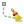
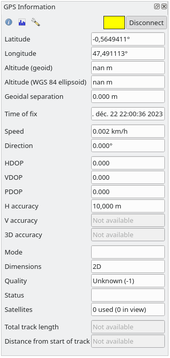
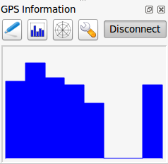

重要
翻訳は あなたが参加できる コミュニティの取り組みです。このページは現在 94.44% 翻訳されています。
20.2. ライブGPS追跡
QGISはGPS受信機を使ったフィールドマッピングを支援することができます。そのようなライブトラッキングの操作は GPSツールバー を使って行われます。QGISとGPS受信機を接続する前に、いくつかの デバイスの設定 が必要かもしれません。
20.2.1. GPSツールバー
GPSツールバー はライブトラッキングセッションを制御するための主要なツールを提供します。これは から起動できます。プロジェクト、GPS、現在のGPSトラックの状態を追跡し、意味のある時だけアクションを有効にします。QGISによってデバイスが検出されると、そのデバイスと対話できるようになります:
GPS位置に地図を再センタリング: automatic recentering parameter に関係なく、マップは直ちに現在のGPS位置に再センタリングされます。
GPSデジタイズ用レイヤを設定： デフォルトではQGISは地物をデジタイズするとき アクティブレイヤに従う、つまり、GPSデジタイズツールは レイヤ パネルで選択されているレイヤに応じて、作成した地物をそのレイヤに保存します。これは便利な場合もありますが、意図しないレイヤに地物を保存するのを避けるには、他のレイヤとの相互作用に注意する必要があることも意味します。このオプションは、ライブトラッキングセッション中に、データ保存用のレイヤを明示的に指定することができ、必要に応じて切り替えることができます。表示されたツールも選択されたレイヤのタイプに応じます。
GPS目的地レイヤは、地物が作成されるときに自動的に編集できる状態となり、ユーザーにはその旨が通知されます。
地物を作成するアクション:
 現在のGPS位置に点地物を作成
現在のGPS位置に点地物を作成 現在のGPSトラックから線地物を作成
現在のGPSトラックから線地物を作成 現在のGPSトラックからポリゴン地物を作成
現在のGPSトラックからポリゴン地物を作成
トラックをリセット
 GPS情報パネルを表示: GPS情報 パネルを開きます
GPS情報パネルを表示: GPS情報 パネルを開きます必要となるGPS情報要素を素早く参照するための表示ボックス:
 位置を表示
位置を表示- ジオイド高を表示
- 標高（WGS84楕円体高）を表示
- 地上速度を表示
- 方位を表示
- 合計トラック長を表示
- 始点からの距離を表示
{kind=link}
{kind=link}
{kind=link}
{kind=link}
{kind=link}
{kind=link}
 設定 ボタンをクリックすると、セッション中に変更することが想定される一般的な設定項目を持つドロップダウンメニューが開きます:
設定 ボタンをクリックすると、セッション中に変更することが想定される一般的な設定項目を持つドロップダウンメニューが開きます:- 位置マーカーを表示
- 方位線を表示
- GPSの方角に合わせて地図を回転
マップの再センタリングを制御するオプション:
GPS位置がマップキャンバスの中心から一定の距離（マップキャンバスの範囲に対する比率）だけオフセットしているとき、
 Always recenter map
Always recenter map Recenter map when leaving extent
Recenter map when leaving extent- Never recenter
GPSデバイスから新しい位置を受信するたびに、
トラックの点を自動追加 します。- 追加された地物を自動保存: GPS位置から作成された地物は、対象レイヤに即座にコミットされます（通常のレイヤ編集バッファはスキップされます）
タイムスタンプ先 は時刻フィックスを格納するフィールドを調節します
- GeoPackage/SpatiaLiteにログ...: 有効にすると、既存のGeoPackage/SpatiaLiteファイルの選択または新規ファイル名の入力が促されます。そのファイルにあらかじめ定義された構造を持つ
gps_pointsテーブルとgps_tracksテーブルが作られます。受信したすべてのGPSメッセージは、GPSからの速度、方位、高度、正確度情報とともに
gps_pointsレイヤーに記録される。GPSが切断（またはQGISが終了）された場合、記録されたGPSトラック全体が（トラックの長さ、開始時刻、終了時刻などの計算された情報と共に） ``gps_tracks``テーブルに追加されます。
- NMEAセンテンスを記録...: デバイスからの全ての生のNMEA文字列をテキストファイルに記録する機能を有効にします
- GPS設定... はGPSの 全体オプション ダイアログにアクセスします
Tip
位置に関するライブステータスバー情報
GPSデバイスが接続され、ユーザーがマップキャンバス上でカーソルを動かすと、ライブステータスバーメッセージに、カーソルからGPS位置までの距離と方位が表示されます。この表示では、プロジェクトの距離と方位の設定が反映されます。タッチスクリーンデバイスでは、タップアンドホールドイベントを使ってライブステータスバーメッセージをトリガーします。
20.2.2. GPS情報パネル
QGISでライブGPS追跡を完全に監視するには、GPS情報パネル を有効にする必要があります（ または Ctrl+0 を押す）。
GPS情報パネル の右上隅では 接続 を押して QGISと繋がったGPS受信機との接続を開始するか、それらを 切断 します。
パネルの左上隅には次のボタンが利用できます:
- 位置: GPS位置とセンサーの現在の詳細
- 設定: セッション中に変更が必要なときがある ライブ追跡オプション へのドロップダウンメニュー
{kind=link}
20.2.2.1. 位置と追加属性
位置 タブでは、GPSが衛星からの信号を受信しているとき、自分の位置が緯度、経度、高度に追加属性を加えて表示されます。

図 20.3 GPS追跡位置と追加属性
緯度
経度
Altitude (Geoid): Altitude/elevation above or below the mean sea level
Altitude (WGS 84 ellipsoid): Altitude/elevation above or below the WGS-84 Earth ellipsoid
ジオイドの差: WGS-84地球楕円体と平均海面（ジオイド）の差。
-は平均海面が楕円体の下にあることを示すTime of fix
Speed: 対地速度
方向: 真北から移動方向へ時計回りに度数で測定した方位
HDOP: 水平精度低下率
VDOP: 垂直精度低下率
PDOP: 位置精度低下率
H accuracy: Horizontal accuracy in meters
V正確度: メートル単位による垂直正確度
3D accuracy: 3D Root Mean Square (RMS) in meters
モード: GPS受信機設定2D/3Dモード、
自動または手動次元: 位置フィックスの次元。
2D、3D、またはフィックスなしのいずれか品質: 測位品質の指標
状態: 位置フィックスの状態。
ValidまたはInvalidのいずれか衛星: フィックスの取得に使われた衛星の数
合計トラック長: 現在のGPSトラックの総距離
トラックの始点からの距離: 現在のGPSトラックの最初の頂点から最新の頂点までの直線距離
20.2.2.2. 信号
信号 タブでは、信号を受信している衛星の信号強度を確認できます。

図 20.4 GPS追跡信号強度
20.2.3. ライブトラッキングのBluetooth GPS への接続
QGISを使用すると、フィールドデータ収集用のBluetooth GPSを接続できます。このタスクを実行するには、GPS、BluetoothデバイスとコンピュータのBluetooth受信機が必要です。
最初にあなたのGPSデバイスが認識され、コンピュータにペアリングさせる必要があります。 GPSをオンにし、あなたの通知領域にBluetoothアイコンに移動し、新しいデバイスを検索します。
デバイス選択マスクの右側で、すべてのデバイスが選択されていることを確認し、GPSユニットが利用可能なものの中に表示されるようにします。次のステップでは、シリアル接続サービスが利用できるはずなので、それを選択して Configure ボタンをクリックします。
Bluetoothの特性によって生じた、GPS接続に割り当てられたCOMポートの番号を覚えておいてください。
GPSが認識された後、接続のためのペアリングを行います。通常、認証コードは 0000 です。
次に GPS情報 パネルを開き、 GPSオプション画面に切り替えます。GPS接続に割り当てられたCOMポートを選択し、接続 をクリックします。しばらくすると、自分の位置を示すカーソルが表示されるはずです。
QGISがGPSデータを受信できない場合は、GPSデバイスを再起動して5〜10秒ほど待ってから、再度接続を試みてください。通常、このソリューションで対応できます。再び接続エラーを受信した場合、同じGPSユニットと対になった別のBluetooth受信機が近くにないことを確認してください。
20.2.4. QGISにおけるGPSデバイス接続の例
20.2.4.1. GPSMAP 60cs を使う
MS Windows
最も簡単に動作させる方法は、GPSGate というミドルウェア（フリーウェア、オープンではない）を使うことです。
プログラムを起動し、GPSデバイスをスキャンさせ（USB接続とBTの両方に対応）、その後QGISで:
で、繋がっているデバイスを検出します。
自動検出 モードが使用できます。GPS情報 パネルの 接続 を押します
Ubuntu/Mint GNU/Linux
Windowsにとって簡単な手段は中間にサーバーを使うことであり、この場合はGPSDで、このため、
プログラムをインストールします
sudo apt install gpsd
それから
garmin_gpsカーネルモジュールを読み込みますsudo modprobe garmin_gps
次にユニットを接続し、ユニットが使っている実際のデバイスを
dmesgで確認します。例//dev/ttyUSB0これでgpsdを起動することができます
gpsd /dev/ttyUSB0
最終的にQGIS ライブ追跡ツールで接続します。
20.2.4.2. BTGP-38KM データロガー (Bluetoothのみ)を使用する
GPSD (Linux) またはGPSGate (Windows) を使うと手間が省略できます。
20.2.4.3. BlueMax GPS-4044 データロガー (BT とUSB両方)を使用する
MS Windows
ライブ追跡はUSBとBTモードのどちらでも動作します。GPSGateを使う場合でも、使わない場合でも、 自動検出 モードを使用するか、ツールに正しいポートを指示します。
Ubuntu/Mint GNU/Linux
USB
ライブ追跡はGPSDありでも動作しますし
gpsd /dev/ttyACM3
またはそれなしでも、直接デバイス（例えば /dev/ttyACM3 ）にQGISライブ追跡ツールを接続することによって動作します。
Bluetooth
ライブ追跡はGPSDありでも動作しますし
gpsd /dev/rfcomm0
またはそれなしでも、直接デバイス（例えば /dev/rfcomm0 ）にQGISライブ追跡ツールを接続することによって動作します。